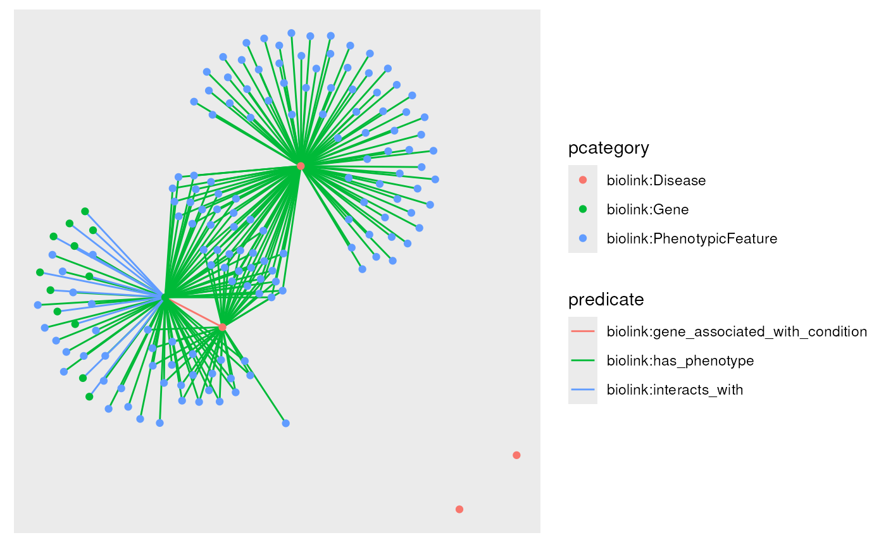
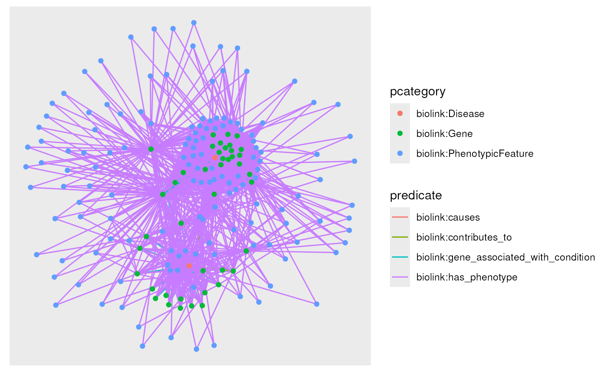
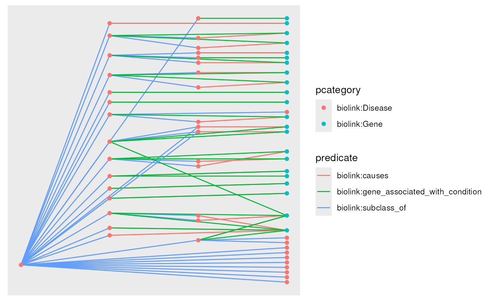
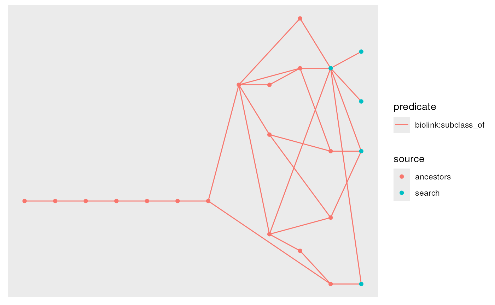
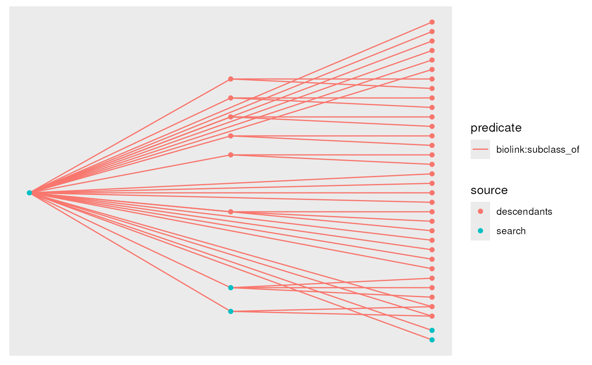
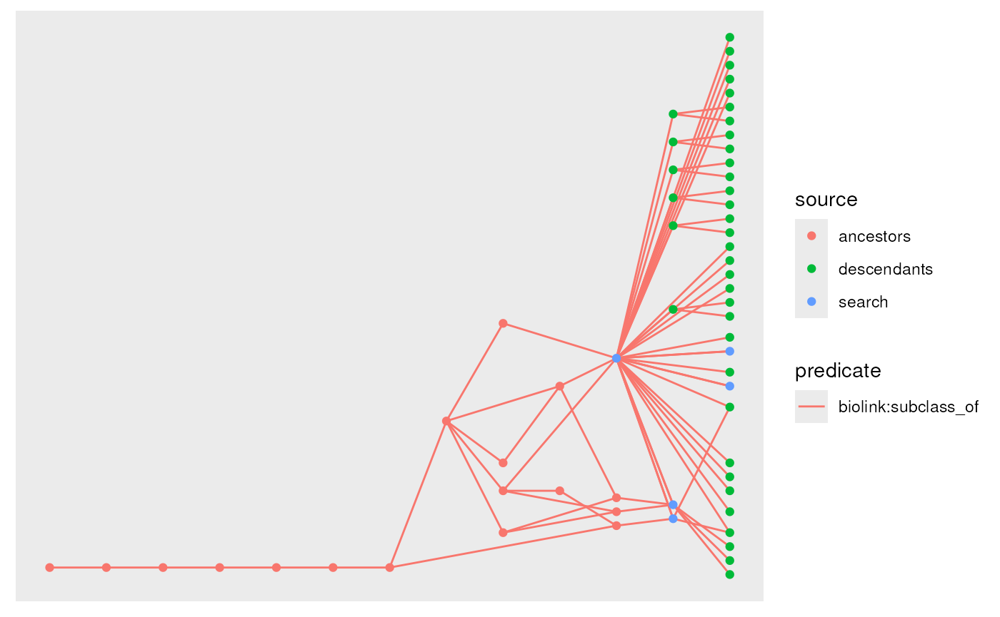
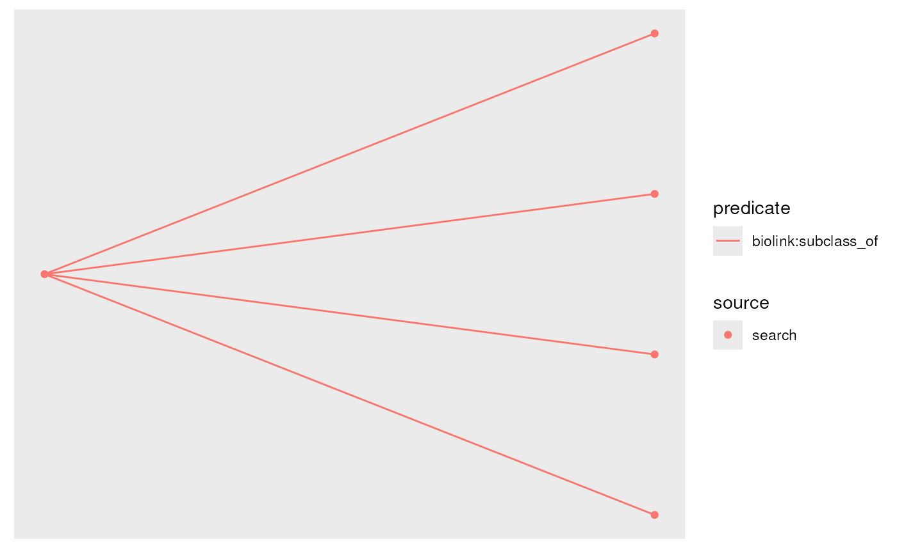

vignettes/monarchr.Rmd
monarchr.RmdThe MonarchR package is designed to support interactive queries against the Monarch Initiative Knowledge Graph (KG). It is in early development and testing, and relies upon publicly-available services managed by the Monarch Initiative.
Briefly, a graph stored in a local variable represents a subsets of
nodes and/or edges from the larger KG. These local graphs are also tidygraph
objects (which are igraphs)
providing a large range of graph-related functionality.
First, let’s load some useful libraries:
The query_ids() function returns matching nodes, while
monarch_search() function uses the keyword search API, returning
up to limit nodes. Neither function returns any edges that
might exist between those nodes.
# id lookup
eds_hits <- query_ids(c("MONDO:0007525", "MONDO:0020066", "MONDO:0034021"))
# or search
eds_hits <- monarch_search("Ehlers-danlos syndrome", limit = 3)
nodes(eds_hits)## # A tibble: 3 × 9
## id category pcategory iri synonym xref name description provided_by
## <chr> <named list> <chr> <chr> <named list> <named list> <chr> <chr> <named lis>
## 1 MONDO:0007526 <chr [6]> biolink:Disease http://purl.obolibrary.org/obo/MONDO_0007526 <chr [20]> <chr [6]> Ehlers-Danlos syndrome, spondylodysplastic type A form of Ehlers-Danlos syndrome characterized by a premature aging with sparse hair, macrocephaly, loose elastic skin, fai… <chr [1]>
## 2 MONDO:0020066 <chr [6]> biolink:Disease http://purl.obolibrary.org/obo/MONDO_0020066 <chr [20]> <chr [15]> Ehlers-Danlos syndrome The Ehlers–Danlos syndromes (EDS) are a clinically and genetically heterogeneous group of heritable connective tissue disor… <chr [1]>
## 3 MONDO:0034021 <chr [6]> biolink:Disease http://purl.obolibrary.org/obo/MONDO_0034021 <chr [1]> <chr [2]> spondylodysplastic Ehlers-Danlos syndrome NA <chr [1]>
edges(eds_hits)## # A tibble: 0 × 2
## # ℹ 2 variables: from <int>, to <int>Tidygraphs are stored as node and edge dataframes; we can “activate”
one or the other to manipulate it, or extract it with
as_tibble(). Let’s add a source to these nodes
of "search", and print the node table.
eds_hits <- eds_hits %>%
activate(nodes) %>%
mutate(source = "search") %>%
select(id, source, everything()) # move new source col to 2nd position
nodes(eds_hits)## # A tibble: 3 × 10
## id source category pcategory iri synonym xref name description provided_by
## <chr> <chr> <named list> <chr> <chr> <named list> <named list> <chr> <chr> <named lis>
## 1 MONDO:0007526 search <chr [6]> biolink:Disease http://purl.obolibrary.org/obo/MONDO_0007526 <chr [20]> <chr [6]> Ehlers-Danlos syndrome, spondylodysplastic type A form of Ehlers-Danlos syndrome characterized by a premature aging with sparse hair, macrocephaly, loose elastic sk… <chr [1]>
## 2 MONDO:0020066 search <chr [6]> biolink:Disease http://purl.obolibrary.org/obo/MONDO_0020066 <chr [20]> <chr [15]> Ehlers-Danlos syndrome The Ehlers–Danlos syndromes (EDS) are a clinically and genetically heterogeneous group of heritable connective tissu… <chr [1]>
## 3 MONDO:0034021 search <chr [6]> biolink:Disease http://purl.obolibrary.org/obo/MONDO_0034021 <chr [1]> <chr [2]> spondylodysplastic Ehlers-Danlos syndrome NA <chr [1]>The pcategory column is a unique addition of MonarchR:
typically, nodes are annotated with multiple categories, which is stored
in the category field in the KG. These tend to relate to
ontological concepts, in that a biolink:Disease is also a
biolink:BiologicalEntity and
biolink:NamedThing. Typically, one of these is most of
interest in application. Rather than try and determine this “primary”
category of interest from the data, we set a priority list of categories
to use, choosing the first available prioritized category, or the first
category available as a fallback. This can be configured via the
kg_prefs option should you so choose:
options("kg_prefs")## $kg_prefs
## $kg_prefs$monarch_kg
## $kg_prefs$monarch_kg$category_priority
## [1] "biolink:Disease" "biolink:PhenotypicFeature" "biolink:Gene" "biolink:AnatomicalEntity" "biolink:BiologicalProcess" "biolink:Pathway" "biolink:Cell" "biolink:CellularComponent" "biolink:ChemicalEntity" "biolink:Drug"Let’s see what kinds of connections exist in the broader graph for these nodes, which is a good idea before we go and fetch some of them. We can summarize the nodes in the surrounding neighborhood, or the edges:
library(knitr)
summarize_neighborhood(eds_hits, summarize = "nodes")## # A tibble: 3 × 2
## pcategory count
## <chr> <int>
## 1 biolink:PhenotypicFeature 143
## 2 biolink:Disease 35
## 3 biolink:Gene 1
summarize_neighborhood(eds_hits, summarize = "edges")## # A tibble: 4 × 6
## count query_pcategory predicate result_pcategory query_category result_category
## <int> <chr> <chr> <chr> <list> <list>
## 1 143 biolink:Disease biolink:has_phenotype biolink:PhenotypicFeature <list [6]> <list [6]>
## 2 33 biolink:Disease biolink:subclass_of biolink:Disease <list [6]> <list [6]>
## 3 2 biolink:Disease biolink:related_to biolink:Disease <list [6]> <list [6]>
## 4 1 biolink:Disease biolink:gene_associated_with_condition biolink:Gene <list [6]> <list [12]>Looking at the neighborhood node summary, there are quite a few phenotypes connected to these diseases, 30 other diseases, and 3 genes.
To see what kinds types of relationships these are, we can look at
the neighborhood edge summary, which breaks down the set of edges
connected to these nodes in a more complex way. Each row represents a
set of connections from query nodes in our graph
g, to result nodes in the surrounding
neighborhood, broken out by the category of the query and result nodes.
Note that predicate may be either direction here: result genes
-cause-> our query diseases, but our query diseases -have-> result
phenotypes. Finally, for accuracy the grouping is actually the full
category list and the pcategory is defined from those, but
in practice pcategory is a good descriptor.
In this example we can see that there are two links from our diseases
(potentially from the same one) to genes via
biolink:gene_associated_with_disease, and one connected to
a gene via biolink:causes. There are also two kinds of
connections to Phenotypes: biolink:has_phenotype and
biolink:has_mode_of_inheritance. Let’s fetch the
connections to genes:
eds_with_genes <- eds_hits |>
fetch_edges(result_categories = "biolink:Gene")## Joining with `by = join_by(id, category, pcategory, iri, synonym, xref, name, description, provided_by)`
eds_with_genes## # A tbl_graph: 4 nodes and 1 edges
## #
## # A rooted forest with 3 trees
## #
## # Node Data: 4 × 14 (active)
## id source category pcategory iri synonym xref name description provided_by in_taxon_label symbol full_name in_taxon
## <chr> <chr> <named list> <chr> <chr> <named list> <named list> <chr> <chr> <named lis> <chr> <chr> <chr> <named >
## 1 MONDO:0007526 search <chr [6]> biolink:Disease http://purl.obolibrary.org/obo/MONDO_0007526 <chr [20]> <chr [6]> Ehlers-Danlos syndrome, spondylodysplastic type A form of Ehlers-Danlos syndrome characterized by a premature aging with sp… <chr [1]> NA NA NA <lgl>
## 2 MONDO:0020066 search <chr [6]> biolink:Disease http://purl.obolibrary.org/obo/MONDO_0020066 <chr [20]> <chr [15]> Ehlers-Danlos syndrome The Ehlers–Danlos syndromes (EDS) are a clinically and genetically heteroge… <chr [1]> NA NA NA <NULL>
## 3 MONDO:0034021 search <chr [6]> biolink:Disease http://purl.obolibrary.org/obo/MONDO_0034021 <chr [1]> <chr [2]> spondylodysplastic Ehlers-Danlos syndrome NA <chr [1]> NA NA NA <NULL>
## 4 HGNC:930 NA <chr [12]> biolink:Gene NA <chr [4]> <chr [2]> B4GALT7 NA <chr [1]> Homo sapiens B4GAL… beta-1,4… <chr>
## #
## # Edge Data: 1 × 15
## from to subject predicate object knowledge_level primary_knowledge_source original_subject agent_type knowledge_source aggregator_knowledge_source provided_by original_object id category
## <int> <int> <chr> <chr> <chr> <named list> <named list> <named list> <named list> <named list> <named list> <named list> <named list> <named list> <named list>
## 1 4 1 HGNC:930 biolink:gene_associated_with_condition MONDO:0007526 <chr [1]> <chr [1]> <chr [1]> <chr [1]> <chr [1]> <list [1]> <list [1]> <chr [1]> <chr [1]> <list [1]>Notice that our source column is still there: we added
it as a custom column to the nodes data earlier, but now
new nodes have been been filled with NA values. We can fix
this up as we pull in the data. This ability to easily modify, filter
and otherwise manipulate the graph data via tabular primitives is a
powerful feature of tidygraph, this blog
post is a good introduction to more.
eds_with_genes <- eds_hits |>
fetch_edges(result_categories = "biolink:Gene") |>
activate(nodes) |>
mutate(source = replace_na(source, "genelinks"))## Joining with `by = join_by(id, category, pcategory, iri, synonym, xref, name, description, provided_by)`
eds_with_genes## # A tbl_graph: 4 nodes and 1 edges
## #
## # A rooted forest with 3 trees
## #
## # Node Data: 4 × 14 (active)
## id source category pcategory iri synonym xref name description provided_by in_taxon_label symbol full_name in_taxon
## <chr> <chr> <named list> <chr> <chr> <named list> <named list> <chr> <chr> <named lis> <chr> <chr> <chr> <named >
## 1 MONDO:0007526 search <chr [6]> biolink:Disease http://purl.obolibrary.org/obo/MONDO_0007526 <chr [20]> <chr [6]> Ehlers-Danlos syndrome, spondylodysplastic type A form of Ehlers-Danlos syndrome characterized by a premature aging with… <chr [1]> NA NA NA <lgl>
## 2 MONDO:0020066 search <chr [6]> biolink:Disease http://purl.obolibrary.org/obo/MONDO_0020066 <chr [20]> <chr [15]> Ehlers-Danlos syndrome The Ehlers–Danlos syndromes (EDS) are a clinically and genetically heter… <chr [1]> NA NA NA <NULL>
## 3 MONDO:0034021 search <chr [6]> biolink:Disease http://purl.obolibrary.org/obo/MONDO_0034021 <chr [1]> <chr [2]> spondylodysplastic Ehlers-Danlos syndrome NA <chr [1]> NA NA NA <NULL>
## 4 HGNC:930 genelinks <chr [12]> biolink:Gene NA <chr [4]> <chr [2]> B4GALT7 NA <chr [1]> Homo sapiens B4GAL… beta-1,4… <chr>
## #
## # Edge Data: 1 × 15
## from to subject predicate object knowledge_level primary_knowledge_source original_subject agent_type knowledge_source aggregator_knowledge_source provided_by original_object id category
## <int> <int> <chr> <chr> <chr> <named list> <named list> <named list> <named list> <named list> <named list> <named list> <named list> <named list> <named list>
## 1 4 1 HGNC:930 biolink:gene_associated_with_condition MONDO:0007526 <chr [1]> <chr [1]> <chr [1]> <chr [1]> <chr [1]> <list [1]> <list [1]> <chr [1]> <chr [1]> <list [1]>
# summarize the outgoing edges connected to the graph so far
# summarize_neighborhood(eds_with_genes, direction = "out", summarize = "edges")The fetch_edges function allows us to narrow which edges
to fetch by specifying the directionality, as well as sets of predicates
and result (neighborhood) node categories allowed. We have diseases and
connected genes: let’s pull in further connections to either Phenotypes
or Genes, via outgoing has_phenotype or interacts_with
relationships:
eds_with_genes_phenos_expanded <- eds_with_genes |>
fetch_edges(direction = "out",
predicates = c("biolink:has_phenotype", "biolink:interacts_with"),
result_categories = c("biolink:Gene", "biolink:PhenotypicFeature"))## Joining with `by = join_by(id, category, pcategory, iri, synonym, xref, name, description, provided_by, in_taxon_label, symbol, full_name, in_taxon)`
eds_with_genes_phenos_expanded## # A tbl_graph: 161 nodes and 231 edges
## #
## # A directed acyclic simple graph with 3 components
## #
## # Node Data: 161 × 14 (active)
## id source category pcategory iri synonym xref name description provided_by in_taxon_label symbol full_name in_taxon
## <chr> <chr> <named list> <chr> <chr> <named list> <named list> <chr> <chr> <named lis> <chr> <chr> <chr> <named >
## 1 MONDO:0007526 search <chr [6]> biolink:Disease http://purl.obolibrary.org/obo/MONDO_0007526 <chr [20]> <chr [6]> Ehlers-Danlos syndrome, spondylodysplastic type A form of Ehlers-Danlos syndrome characterized by a premature… <chr [1]> NA NA NA <lgl>
## 2 MONDO:0020066 search <chr [6]> biolink:Disease http://purl.obolibrary.org/obo/MONDO_0020066 <chr [20]> <chr [15]> Ehlers-Danlos syndrome The Ehlers–Danlos syndromes (EDS) are a clinically and geneti… <chr [1]> NA NA NA <NULL>
## 3 MONDO:0034021 search <chr [6]> biolink:Disease http://purl.obolibrary.org/obo/MONDO_0034021 <chr [1]> <chr [2]> spondylodysplastic Ehlers-Danlos syndrome NA <chr [1]> NA NA NA <NULL>
## 4 HGNC:930 genelinks <chr [12]> biolink:Gene NA <chr [4]> <chr [2]> B4GALT7 NA <chr [1]> Homo sapiens B4GAL… beta-1,4… <chr>
## 5 HP:0100813 NA <chr [6]> biolink:PhenotypicFeature http://purl.obolibrary.org/obo/HP_0100813 <chr [1]> <chr [4]> Testicular torsion Testicular torsion is when the spermatic cord to a testicle t… <chr [1]> NA NA NA <lgl>
## 6 HP:0000963 NA <chr [6]> biolink:PhenotypicFeature http://purl.obolibrary.org/obo/HP_0000963 <chr [1]> <chr [2]> Thin skin Reduction in thickness of the skin, generally associated with… <chr [1]> NA NA NA <lgl>
## 7 HP:0001363 NA <chr [6]> biolink:PhenotypicFeature http://purl.obolibrary.org/obo/HP_0001363 <chr [8]> <chr [5]> Craniosynostosis Craniosynostosis refers to the premature closure of the crani… <chr [1]> NA NA NA <lgl>
## 8 HP:0000230 NA <chr [6]> biolink:PhenotypicFeature http://purl.obolibrary.org/obo/HP_0000230 <chr [3]> <chr [3]> Gingivitis Inflammation of the gingiva. <chr [1]> NA NA NA <lgl>
## 9 HP:0000193 NA <chr [6]> biolink:PhenotypicFeature http://purl.obolibrary.org/obo/HP_0000193 <chr [6]> <chr [2]> Bifid uvula Uvula separated into two parts most easily seen at the tip. <chr [1]> NA NA NA <lgl>
## 10 HP:0002816 NA <chr [6]> biolink:PhenotypicFeature http://purl.obolibrary.org/obo/HP_0002816 <chr [3]> <chr [2]> Genu recurvatum An abnormally increased extension of the knee joint, so that … <chr [1]> NA NA NA <lgl>
## # ℹ 151 more rows
## #
## # Edge Data: 231 × 18
## from to subject predicate object knowledge_level primary_knowledge_source original_subject agent_type knowledge_source aggregator_knowledge_source provided_by original_object id category has_evidence publications frequency_qualifier
## <int> <int> <chr> <chr> <chr> <named list> <named list> <named list> <named list> <named list> <named list> <named list> <named list> <named list> <named list> <named list> <named list> <named list>
## 1 4 1 HGNC:930 biolink:gene_associated_with_condition MONDO:0007526 <chr [1]> <chr [1]> <chr [1]> <chr [1]> <chr [1]> <list [1]> <list [1]> <chr [1]> <chr [1]> <list [1]> <NULL> <NULL> <NULL>
## 2 4 5 HGNC:930 biolink:has_phenotype HP:0100813 <chr [1]> <chr [1]> <chr [1]> <chr [1]> <chr [1]> <list [1]> <list [1]> <NULL> <chr [1]> <list [1]> <NULL> <NULL> <NULL>
## 3 4 6 HGNC:930 biolink:has_phenotype HP:0000963 <chr [1]> <chr [1]> <chr [1]> <chr [1]> <chr [1]> <list [1]> <list [1]> <NULL> <chr [1]> <list [1]> <NULL> <NULL> <NULL>
## # ℹ 228 more rowsLet’s create a quick visualization:
ggraph(eds_with_genes_phenos_expanded, layout = "fr") +
geom_edge_link(aes(color = predicate)) +
geom_node_point(aes(color = pcategory))
For our next trick, let’s find all the phenotypes connected to genes associated with FA and Cystic Fibrosis. We’ll then find the intersection of those phenotypes with an inner join on the nodes.
fa <- monarch_search("Fanconi anemia", limit = 1) %>%
fetch_edges(result_categories = "biolink:Gene") %>%
fetch_edges(direction = "out", predicates = "biolink:has_phenotype")## Joining with `by = join_by(id, category, pcategory, iri, synonym, xref, name, description, provided_by)`
## Joining with `by = join_by(id, category, pcategory, iri, synonym, xref, name, description, provided_by, in_taxon_label, symbol, full_name, in_taxon)`
cf <- monarch_search("Cystic Fibrosis", limit = 1) %>%
fetch_edges(result_categories = "biolink:Gene") %>%
fetch_edges(direction = "out", predicates = "biolink:has_phenotype")## Joining with `by = join_by(id, category, pcategory, iri, synonym, xref, name, description, provided_by)`
## Joining with `by = join_by(id, category, pcategory, iri, synonym, xref, name, description, provided_by, in_taxon_label, symbol, full_name, in_taxon)`
shared_nodes <- inner_join(nodes(fa), nodes(cf))## Joining with `by = join_by(id, category, pcategory, iri, synonym, xref, name, description, provided_by, in_taxon_label, symbol, full_name, in_taxon)`
shared_nodes## # A tibble: 142 × 13
## id category pcategory iri synonym xref name description provided_by in_taxon_label symbol full_name in_taxon
## <chr> <named list> <chr> <chr> <named list> <named list> <chr> <chr> <named lis> <chr> <chr> <chr> <named >
## 1 HP:0002027 <chr [6]> biolink:PhenotypicFeature http://purl.obolibrary.org/obo/HP_0002027 <chr [7]> <chr [4]> Abdominal pain An unpleasant sensation characterized by physical discomfort (such as pricking, throbbing,… <chr [1]> NA NA NA <lgl>
## 2 HP:0002650 <chr [6]> biolink:PhenotypicFeature http://purl.obolibrary.org/obo/HP_0002650 <lgl [1]> <chr [6]> Scoliosis The presence of an abnormal lateral curvature of the spine. <chr [1]> NA NA NA <lgl>
## 3 HP:0012210 <chr [6]> biolink:PhenotypicFeature http://purl.obolibrary.org/obo/HP_0012210 <chr [8]> <chr [3]> Abnormal renal morphology Any structural anomaly of the kidney. <chr [1]> NA NA NA <lgl>
## 4 HP:0012639 <chr [6]> biolink:PhenotypicFeature http://purl.obolibrary.org/obo/HP_0012639 <chr [2]> <chr [3]> Abnormal nervous system morphology A structural anomaly of the nervous system. <chr [1]> NA NA NA <lgl>
## 5 HP:0002039 <chr [6]> biolink:PhenotypicFeature http://purl.obolibrary.org/obo/HP_0002039 <chr [1]> <chr [3]> Anorexia Anorexia, or the loss of appetite for food, is a medical condition. <chr [1]> NA NA NA <lgl>
## 6 HP:0011463 <chr [6]> biolink:PhenotypicFeature http://purl.obolibrary.org/obo/HP_0011463 <chr [1]> <chr [1]> Childhood onset Onset of disease at the age of between 1 and 5 years. <chr [1]> NA NA NA <lgl>
## 7 HP:0008053 <chr [6]> biolink:PhenotypicFeature http://purl.obolibrary.org/obo/HP_0008053 <chr [2]> <chr [1]> Aplasia/Hypoplasia of the iris Absence or underdevelopment of the iris. <chr [1]> NA NA NA <lgl>
## 8 HP:0002716 <chr [6]> biolink:PhenotypicFeature http://purl.obolibrary.org/obo/HP_0002716 <chr [2]> <chr [3]> Lymphadenopathy Enlargment (swelling) of a lymph node. <chr [1]> NA NA NA <lgl>
## 9 HP:0006501 <chr [6]> biolink:PhenotypicFeature http://purl.obolibrary.org/obo/HP_0006501 <chr [4]> <chr [1]> Aplasia/Hypoplasia of the radius A small/hypoplastic or absent/aplastic radius. <chr [1]> NA NA NA <lgl>
## 10 HP:0001738 <chr [6]> biolink:PhenotypicFeature http://purl.obolibrary.org/obo/HP_0001738 <chr [2]> <chr [5]> Exocrine pancreatic insufficiency Impaired function of the exocrine pancreas associated with a reduced ability to digest foo… <chr [1]> NA NA NA <lgl>
## # ℹ 132 more rowsLet’s see these in context, by doing a full join on our EDS and CF graphs, then keeping only nodes that are either diseases, genes, or one of these shared phenotypes:
merged <- fa %>%
graph_join(cf) %>%
activate(nodes) %>%
filter(pcategory %in% c("biolink:Gene", "biolink:Disease") | id %in% shared_nodes$id)## Joining with `by = join_by(id, category, pcategory, iri, synonym, xref, name, description, provided_by, in_taxon_label, symbol, full_name, in_taxon)`
ggraph(merged, layout = "fr") +
geom_edge_link(aes(color = predicate)) +
geom_node_point(aes(color = pcategory))
The fetch_edges function can also be used to fetch edges
transitively. For example, if we were to try and look for genes
connected to the first hit for Ehlers-Danlos Syndrome, we would find
none. However, we can use the transitive parameter to find
genes connected to diseases that are subclasses of Ehlers-Danlos
Syndrome, and then pull in the genes from there.
eds_with_subtypes <- monarch_search("Ehlers-danlos syndrome", limit = 1) |>
fetch_edges(direction = "in", predicates = "biolink:subclass_of", transitive = TRUE) |>
fetch_edges(result_categories = "biolink:Gene")## Joining with `by = join_by(id, category, pcategory, iri, synonym, xref, name, description, provided_by)`
## Joining with `by = join_by(id, category, pcategory, iri, synonym, xref, name, description, provided_by)`
# plot
ggraph(eds_with_subtypes, layout = "sugiyama") +
geom_edge_link(aes(color = predicate)) +
geom_node_point(aes(color = pcategory)) +
coord_flip()
When using transitive = TRUE, each relationship type
will traversed separately and the results joined. It’s always wise to
use transitive = TRUE with caution, as it can result in a
large number of edges being fetched, and always indicate a direction of
"in" or "out" to avoid fetching the entire
KG.
With some creativity, we do quite quite a lot with these few primitives. For example, from an initial search of 5 hits for EDS, we can visualize all of their ancestors. We can do the same for descendants. Note that these will find edges between the nodes in the search results, as well as intermediate nodes.
eds_search <- monarch_search("Ehlers-danlos syndrome", limit = 5) %>%
activate(nodes) %>%
mutate(source = "search")
eds_search_ancestors <- eds_search |>
fetch_edges(direction = "out", predicates = "biolink:subclass_of", transitive = TRUE) %>%
activate(nodes) %>%
mutate(source = replace_na(source, "ancestors"))## Joining with `by = join_by(id, category, pcategory, iri, synonym, xref, name, description, provided_by)`
eds_search_descendants <- eds_search |>
fetch_edges(direction = "in", predicates = "biolink:subclass_of", transitive = TRUE) %>%
activate(nodes) %>%
mutate(source = replace_na(source, "descendants"))## Joining with `by = join_by(id, category, pcategory, iri, synonym, xref, name, description, provided_by)`
ggraph(eds_search_ancestors, layout = "sugiyama") +
geom_edge_link(aes(color = predicate)) +
geom_node_point(aes(color = source)) +
coord_flip()
ggraph(eds_search_descendants, layout = "sugiyama") +
geom_edge_link(aes(color = predicate)) +
geom_node_point(aes(color = source)) +
coord_flip()
Let’s see the full join of this data, and if we take the inner join of the nodes, we should see just how our 5 search results are connected to each other (via intermediary nodes if necessary).
merged <- eds_search_ancestors |>
graph_join(eds_search_descendants)## Joining with `by = join_by(id, category, pcategory, iri, synonym, xref, name, description, provided_by, source)`
ggraph(merged, layout = "sugiyama") +
geom_edge_link(aes(color = predicate)) +
geom_node_point(aes(color = source)) +
coord_flip()
inner <- eds_search_ancestors %>%
activate(nodes) %>%
inner_join(nodes(eds_search_descendants))## Joining with `by = join_by(id, category, pcategory, iri, synonym, xref, name, description, provided_by, source)`
ggraph(inner, layout = "sugiyama") +
geom_edge_link(aes(color = predicate)) +
geom_node_point(aes(color = source)) +
coord_flip()
As a functional language, R provides powerful features for working
with lists of data. In this example we begin with a graph with 5 disease
nodes of interest; we use explode() to split the graph into
a list of 5 single-node graphs, then use lapply() to work
with these in parallel, fetching neighborhoods, extracting the nodes
data, and removing the original searched nodes based on the
source column we added earlier.
eds_search %>% # starting with a graph with 5 disease nodes
explode() %>% # split into a list of 5 single-node graphs
lapply(fetch_edges) %>% # fetch neighborhood edges for each graph
lapply(nodes) %>% # extract nodes df from each graph
lapply(function(nodes_df) {filter(nodes_df, is.na(source))}) # remove original searched nodes from each df## Joining with `by = join_by(id, category, pcategory, iri, synonym, xref, name, description, provided_by)`
## Joining with `by = join_by(id, category, pcategory, iri, synonym, xref, name, description, provided_by)`
## Joining with `by = join_by(id, category, pcategory, iri, synonym, xref, name, description, provided_by)`
## Joining with `by = join_by(id, category, pcategory, iri, synonym, xref, name, description, provided_by)`
## Joining with `by = join_by(id, category, pcategory, iri, synonym, xref, name, description, provided_by)`## [[1]]
## # A tibble: 73 × 14
## id category pcategory iri synonym xref name description provided_by source in_taxon_label symbol full_name in_taxon
## <chr> <named list> <chr> <chr> <named list> <named list> <chr> <chr> <named lis> <chr> <chr> <chr> <chr> <named >
## 1 HP:0001058 <chr [6]> biolink:PhenotypicFeature http://purl.obolibrary.org/obo/HP_0001058 <chr [1]> <chr [1]> Poor wound healing A reduced ability to heal cutaneous wounds. <chr [1]> NA NA NA NA <lgl>
## 2 HP:0003834 <chr [6]> biolink:PhenotypicFeature http://purl.obolibrary.org/obo/HP_0003834 <chr [1]> <chr [4]> Shoulder dislocation A displacement or misalignment of the humerus with respect to the other bones of the should jo… <chr [1]> NA NA NA NA <lgl>
## 3 HP:0030009 <chr [6]> biolink:PhenotypicFeature http://purl.obolibrary.org/obo/HP_0030009 <chr [1]> <chr [3]> Cervical insufficiency A cervix that shows a painless dilation and shortening during the second trimester of pregnanc… <chr [1]> NA NA NA NA <lgl>
## 4 HP:0000993 <chr [6]> biolink:PhenotypicFeature http://purl.obolibrary.org/obo/HP_0000993 <chr [1]> <chr [1]> Molluscoid pseudotumors Bluish-grey, spongy nodules associated with scars over pressure points and easily traumatized … <chr [1]> NA NA NA NA <lgl>
## 5 HP:0001278 <chr [6]> biolink:PhenotypicFeature http://purl.obolibrary.org/obo/HP_0001278 <chr [2]> <chr [3]> Orthostatic hypotension A form of hypotension characterized by a sudden fall in blood pressure that occurs when a pers… <chr [1]> NA NA NA NA <lgl>
## 6 HP:0001030 <chr [6]> biolink:PhenotypicFeature http://purl.obolibrary.org/obo/HP_0001030 <chr [2]> <chr [3]> Fragile skin Skin that splits easily with minimal injury. <chr [1]> NA NA NA NA <lgl>
## 7 HP:0001027 <chr [6]> biolink:PhenotypicFeature http://purl.obolibrary.org/obo/HP_0001027 <chr [1]> <chr [1]> Soft, doughy skin A skin texture that is unusually soft (and may feel silky), and has a malleable consistency re… <chr [1]> NA NA NA NA <lgl>
## 8 HP:0001252 <chr [6]> biolink:PhenotypicFeature http://purl.obolibrary.org/obo/HP_0001252 <chr [6]> <chr [4]> Hypotonia Hypotonia is an abnormally low muscle tone (the amount of tension or resistance to movement in… <chr [1]> NA NA NA NA <lgl>
## 9 HP:0001065 <chr [6]> biolink:PhenotypicFeature http://purl.obolibrary.org/obo/HP_0001065 <chr [5]> <chr [6]> Striae distensae Thinned, erythematous, depressed bands of atrophic skin. Initially, striae appear as flattened… <chr [1]> NA NA NA NA <lgl>
## 10 HP:0000938 <chr [6]> biolink:PhenotypicFeature http://purl.obolibrary.org/obo/HP_0000938 <chr [3]> <chr [5]> Osteopenia Osteopenia is a term to define bone density that is not normal but also not as low as osteopor… <chr [1]> NA NA NA NA <lgl>
## # ℹ 63 more rows
##
## [[2]]
## # A tibble: 47 × 14
## id category pcategory iri synonym xref name description provided_by source in_taxon_label symbol full_name in_taxon
## <chr> <named list> <chr> <chr> <named list> <named list> <chr> <chr> <named lis> <chr> <chr> <chr> <chr> <named >
## 1 MONDO:0021136 <chr [6]> biolink:Disease http://purl.obolibrary.org/obo/MONDO_0021136 <chr [1]> <lgl [1]> rare A disease or disorder is defined as rare in Europe when it… <chr [1]> NA NA NA NA <lgl>
## 2 MONDO:0021140 <chr [6]> biolink:Disease http://purl.obolibrary.org/obo/MONDO_0021140 <chr [1]> <lgl [1]> congenital A characteristic of a disease in which the disease is pres… <chr [1]> NA NA NA NA <lgl>
## 3 MONDO:0012873 <chr [6]> biolink:Disease http://purl.obolibrary.org/obo/MONDO_0012873 <chr [5]> <chr [6]> Ehlers-Danlos syndrome, spondylocheirodysplastic type Ehlers-Danlos syndrome, spondylocheirodysplastic type is a… <chr [1]> NA NA NA NA <lgl>
## 4 MONDO:0020066 <chr [6]> biolink:Disease http://purl.obolibrary.org/obo/MONDO_0020066 <chr [20]> <chr [15]> Ehlers-Danlos syndrome The Ehlers–Danlos syndromes (EDS) are a clinically and gen… <chr [1]> NA NA NA NA <lgl>
## 5 MONDO:0015327 <chr [6]> biolink:Disease http://purl.obolibrary.org/obo/MONDO_0015327 <lgl [1]> <chr [2]> developmental anomaly of metabolic origin NA <chr [1]> NA NA NA NA <lgl>
## 6 MONDO:0019052 <chr [6]> biolink:Disease http://purl.obolibrary.org/obo/MONDO_0019052 <chr [15]> <chr [10]> inborn errors of metabolism An inherited disorder resulting from an enzyme defect in b… <chr [1]> NA NA NA NA <lgl>
## 7 HP:0000506 <chr [6]> biolink:PhenotypicFeature http://purl.obolibrary.org/obo/HP_0000506 <chr [4]> <chr [3]> Telecanthus Distance between the inner canthi more than two standard d… <chr [1]> NA NA NA NA <lgl>
## 8 HP:0000963 <chr [6]> biolink:PhenotypicFeature http://purl.obolibrary.org/obo/HP_0000963 <chr [1]> <chr [2]> Thin skin Reduction in thickness of the skin, generally associated w… <chr [1]> NA NA NA NA <lgl>
## 9 HP:0001642 <chr [6]> biolink:PhenotypicFeature http://purl.obolibrary.org/obo/HP_0001642 <chr [4]> <chr [4]> Pulmonic stenosis A narrowing of the right ventricular outflow tract that ca… <chr [1]> NA NA NA NA <lgl>
## 10 HP:0001382 <chr [6]> biolink:PhenotypicFeature http://purl.obolibrary.org/obo/HP_0001382 <chr [7]> <chr [2]> Joint hypermobility The ability of a joint to move beyond its normal range of … <chr [1]> NA NA NA NA <lgl>
## # ℹ 37 more rows
##
## [[3]]
## # A tibble: 30 × 10
## id category pcategory iri synonym xref name description provided_by source
## <chr> <named list> <chr> <chr> <named list> <named list> <chr> <chr> <named lis> <chr>
## 1 MONDO:0034021 <chr [6]> biolink:Disease http://purl.obolibrary.org/obo/MONDO_0034021 <chr [1]> <chr [2]> spondylodysplastic Ehlers-Danlos syndrome NA <chr [1]> NA
## 2 MONDO:0002254 <chr [6]> biolink:Disease http://purl.obolibrary.org/obo/MONDO_0002254 <chr [9]> <chr [5]> syndromic disease A group of signs, symptoms, and clinicopathological characteristics that may or may not have a genetic… <chr [1]> NA
## 3 MONDO:0007523 <chr [6]> biolink:Disease http://purl.obolibrary.org/obo/MONDO_0007523 <chr [17]> <chr [10]> Ehlers-Danlos syndrome, hypermobility type Ehlers-Danlos syndrome, hypermobility type (HT-EDS) is the most frequent form of EDS, a group of hered… <chr [1]> NA
## 4 MONDO:0016290 <chr [6]> biolink:Disease http://purl.obolibrary.org/obo/MONDO_0016290 <chr [3]> <chr [4]> Hernández-Aguirre Negrete syndrome A syndrome is characterized by major seizures, dysmorphic features (round face, bulbous nose, wide mou… <chr [1]> NA
## 5 MONDO:0012114 <chr [6]> biolink:Disease http://purl.obolibrary.org/obo/MONDO_0012114 <chr [3]> <chr [4]> Ehlers-Danlos syndrome, Beasley-Cohen type NA <chr [1]> NA
## 6 MONDO:0007842 <chr [6]> biolink:Disease http://purl.obolibrary.org/obo/MONDO_0007842 <chr [15]> <chr [6]> joint laxity, familial A type of Ehlers-Danlos syndrome characterized by generalized joint hypermobility often complicated by… <chr [1]> NA
## 7 MONDO:0019755 <chr [6]> biolink:Disease http://purl.obolibrary.org/obo/MONDO_0019755 <chr [6]> <chr [4]> developmental defect during embryogenesis A disease that has its basis in the disruption of embryonic morphogenesis. <chr [1]> NA
## 8 MONDO:0003847 <chr [6]> biolink:Disease http://purl.obolibrary.org/obo/MONDO_0003847 <chr [12]> <chr [7]> hereditary disease A disease that is caused by genetic modifications where those modifications are inherited from a paren… <chr [1]> NA
## 9 MONDO:0016469 <chr [6]> biolink:Disease http://purl.obolibrary.org/obo/MONDO_0016469 <chr [1]> <chr [2]> Ehlers-Danlos syndrome, vascular-like type Ehlers-Danlos, vascular-like type is an adult-onset form of Ehlers-Danlos syndrome characterized by sp… <chr [1]> NA
## 10 MONDO:0007528 <chr [6]> biolink:Disease http://purl.obolibrary.org/obo/MONDO_0007528 <chr [3]> <chr [3]> Ehlers-Danlos syndrome, autosomal dominant, type unspecified NA <chr [1]> NA
## # ℹ 20 more rows
##
## [[4]]
## # A tibble: 76 × 10
## id category pcategory iri synonym xref name description provided_by source
## <chr> <named list> <chr> <chr> <named list> <named list> <chr> <chr> <named lis> <chr>
## 1 HP:0011675 <chr [6]> biolink:PhenotypicFeature http://purl.obolibrary.org/obo/HP_0011675 <chr [8]> <chr [11]> Arrhythmia Any cardiac rhythm other than the normal sinus rhythm. Such a rhythm may be either of sinus or ectopic ori… <chr [1]> NA
## 2 HP:0002797 <chr [6]> biolink:PhenotypicFeature http://purl.obolibrary.org/obo/HP_0002797 <chr [3]> <chr [4]> Osteolysis Osteolysis refers to the destruction of bone through bone resorption with removal or loss of calcium. <chr [1]> NA
## 3 HP:0003401 <chr [6]> biolink:PhenotypicFeature http://purl.obolibrary.org/obo/HP_0003401 <chr [3]> <chr [3]> Paresthesia Abnormal sensations such as tingling, pricking, or numbness of the skin with no apparent physical cause. <chr [1]> NA
## 4 HP:0000563 <chr [6]> biolink:PhenotypicFeature http://purl.obolibrary.org/obo/HP_0000563 <chr [2]> <chr [3]> Keratoconus A cone-shaped deformity of the cornea characterized by the presence of corneal distortion secondary to thi… <chr [1]> NA
## 5 HP:0000421 <chr [6]> biolink:PhenotypicFeature http://purl.obolibrary.org/obo/HP_0000421 <chr [7]> <chr [9]> Epistaxis Epistaxis, or nosebleed, refers to a hemorrhage localized in the nose. <chr [1]> NA
## 6 HP:0002017 <chr [6]> biolink:PhenotypicFeature http://purl.obolibrary.org/obo/HP_0002017 <chr [1]> <chr [2]> Nausea and vomiting Nausea is a commonly encountered symptom that has been defined as an unpleasant painless subjective feelin… <chr [1]> NA
## 7 HP:0005294 <chr [6]> biolink:PhenotypicFeature http://purl.obolibrary.org/obo/HP_0005294 <lgl [1]> <chr [6]> Arterial dissection A separation (dissection) of the layers of an artery. <chr [1]> NA
## 8 HP:0001252 <chr [6]> biolink:PhenotypicFeature http://purl.obolibrary.org/obo/HP_0001252 <chr [6]> <chr [4]> Hypotonia Hypotonia is an abnormally low muscle tone (the amount of tension or resistance to movement in a muscle). … <chr [1]> NA
## 9 HP:0010318 <chr [6]> biolink:PhenotypicFeature http://purl.obolibrary.org/obo/HP_0010318 <chr [2]> <chr [1]> Aplasia/Hypoplasia of the abdominal wall musculature Absence or underdevelopment of the abdominal musculature. <chr [1]> NA
## 10 HP:0001376 <chr [6]> biolink:PhenotypicFeature http://purl.obolibrary.org/obo/HP_0001376 <chr [5]> <chr [1]> Limitation of joint mobility A reduction in the freedom of movement of one or more joints. <chr [1]> NA
## # ℹ 66 more rows
##
## [[5]]
## # A tibble: 106 × 10
## id category pcategory iri synonym xref name description provided_by source
## <chr> <named list> <chr> <chr> <named list> <named list> <chr> <chr> <named lis> <chr>
## 1 HP:0002093 <chr [6]> biolink:PhenotypicFeature http://purl.obolibrary.org/obo/HP_0002093 <chr [2]> <chr [4]> Respiratory insufficiency NA <chr [1]> NA
## 2 HP:0011332 <chr [6]> biolink:PhenotypicFeature http://purl.obolibrary.org/obo/HP_0011332 <chr [7]> <chr [4]> Hemifacial hypoplasia Unilateral underdevelopment of the facial tissues, including muscles and bones. <chr [1]> NA
## 3 HP:0012368 <chr [6]> biolink:PhenotypicFeature http://purl.obolibrary.org/obo/HP_0012368 <chr [4]> <chr [1]> Flat face Absence of concavity or convexity of the face when viewed in profile. <chr [1]> NA
## 4 HP:0000954 <chr [6]> biolink:PhenotypicFeature http://purl.obolibrary.org/obo/HP_0000954 <chr [8]> <chr [2]> Single transverse palmar crease The distal and proximal transverse palmar creases are merged into a single transverse palmar crease. <chr [1]> NA
## 5 HP:0000545 <chr [6]> biolink:PhenotypicFeature http://purl.obolibrary.org/obo/HP_0000545 <chr [4]> <chr [3]> Myopia An abnormality of refraction characterized by the ability to see objects nearby clearly, while objects in the distance appear b… <chr [1]> NA
## 6 HP:0000160 <chr [6]> biolink:PhenotypicFeature http://purl.obolibrary.org/obo/HP_0000160 <chr [4]> <chr [3]> Narrow mouth Distance between the commissures of the mouth more than 2 SD below the mean. Alternatively, an apparently decreased width of th… <chr [1]> NA
## 7 HP:0008499 <chr [6]> biolink:PhenotypicFeature http://purl.obolibrary.org/obo/HP_0008499 <chr [4]> <chr [1]> High hypermetropia A severe form of hypermetropia with over +5.00 diopters. <chr [1]> NA
## 8 HP:0000337 <chr [6]> biolink:PhenotypicFeature http://purl.obolibrary.org/obo/HP_0000337 <chr [7]> <chr [1]> Broad forehead Width of the forehead or distance between the frontotemporales is more than two standard deviations above the mean (objective);… <chr [1]> NA
## 9 HP:0001075 <chr [6]> biolink:PhenotypicFeature http://purl.obolibrary.org/obo/HP_0001075 <chr [2]> <chr [3]> Atrophic scars Scars that form a depression compared to the level of the surrounding skin because of damage to the collagen, fat or other tiss… <chr [1]> NA
## 10 HP:0007787 <chr [6]> biolink:PhenotypicFeature http://purl.obolibrary.org/obo/HP_0007787 <chr [2]> <chr [2]> Posterior subcapsular cataract A type of cataract affecting the posterior pole of lens immediately adjacent to ('beneath') the Lens capsule. <chr [1]> NA
## # ℹ 96 more rows
utils::sessionInfo()## R version 4.4.0 (2024-04-24)
## Platform: x86_64-pc-linux-gnu
## Running under: Ubuntu 22.04.4 LTS
##
## Matrix products: default
## BLAS: /usr/lib/x86_64-linux-gnu/openblas-pthread/libblas.so.3
## LAPACK: /usr/lib/x86_64-linux-gnu/openblas-pthread/libopenblasp-r0.3.20.so; LAPACK version 3.10.0
##
## locale:
## [1] LC_CTYPE=en_US.UTF-8 LC_NUMERIC=C LC_TIME=en_US.UTF-8 LC_COLLATE=en_US.UTF-8 LC_MONETARY=en_US.UTF-8 LC_MESSAGES=en_US.UTF-8 LC_PAPER=en_US.UTF-8 LC_NAME=C LC_ADDRESS=C LC_TELEPHONE=C
## [11] LC_MEASUREMENT=en_US.UTF-8 LC_IDENTIFICATION=C
##
## time zone: UTC
## tzcode source: system (glibc)
##
## attached base packages:
## [1] stats graphics grDevices utils datasets methods base
##
## other attached packages:
## [1] knitr_1.47 ggiraph_0.8.10 ggraph_2.2.1 ggplot2_3.5.1 kableExtra_1.4.0 tidygraph_1.3.1 dplyr_1.1.4 monarchr_0.2.2
##
## loaded via a namespace (and not attached):
## [1] gtable_0.3.5 xfun_0.44 bslib_0.7.0 htmlwidgets_1.6.4 ggrepel_0.9.5 vctrs_0.6.5 tools_4.4.0 generics_0.1.3 curl_5.2.1 tibble_3.2.1 fansi_1.0.6 highr_0.11 pkgconfig_2.0.3 desc_1.4.3 uuid_1.2-0
## [16] assertthat_0.2.1 lifecycle_1.0.4 compiler_4.4.0 farver_2.1.2 stringr_1.5.1 textshaping_0.4.0 munsell_0.5.1 ggforce_0.4.2 graphlayouts_1.1.1 htmltools_0.5.8.1 sass_0.4.9 yaml_2.3.8 pillar_1.9.0 pkgdown_2.0.9 jquerylib_0.1.4
## [31] tidyr_1.3.1 MASS_7.3-60.2 cachem_1.1.0 viridis_0.6.5 tidyselect_1.2.1 digest_0.6.35 stringi_1.8.4 purrr_1.0.2 labeling_0.4.3 polyclip_1.10-6 fastmap_1.2.0 grid_4.4.0 colorspace_2.1-0 cli_3.6.2 neo2R_2.4.2
## [46] magrittr_2.0.3 base64enc_0.1-3 utf8_1.2.4 withr_3.0.0 scales_1.3.0 rmarkdown_2.27 httr_1.4.7 igraph_2.0.3 gridExtra_2.3 ragg_1.3.2 memoise_2.0.1 evaluate_0.24.0 viridisLite_0.4.2 rlang_1.1.4 Rcpp_1.0.12
## [61] glue_1.7.0 tweenr_2.0.3 xml2_1.3.6 svglite_2.1.3 rstudioapi_0.16.0 jsonlite_1.8.8 R6_2.5.1 systemfonts_1.1.0 fs_1.6.4